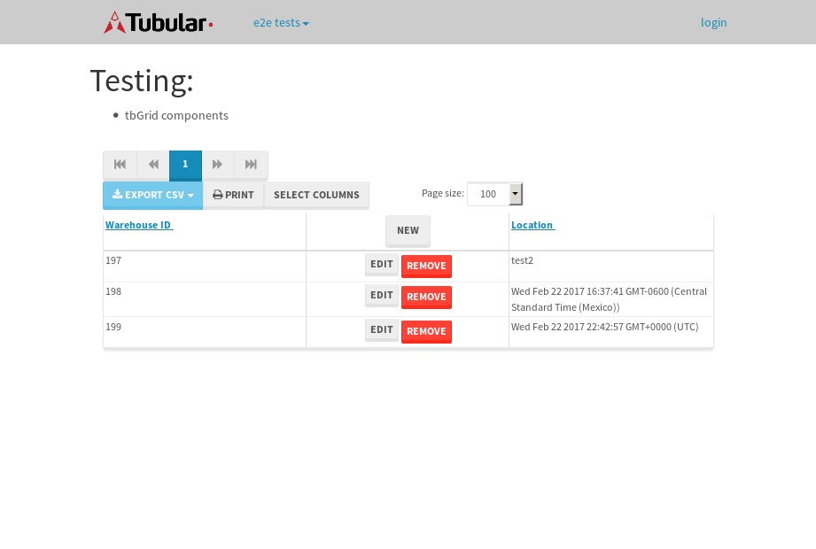

tbColumn.Grid Sorting - 28.602sTests: 5Skipped: 0Failures: 0 should sort data in ascending order then on descending order when sorting by Order Id column - 5.253sTests passed: 100.00%should order data in ascending order when click-sorting an unsorted text column - 4.888sTests passed: 100.00%should order data in descending order when click-sorting an ascending-sorted text column - 5.813sTests passed: 100.00%should order data in ascending order when click-sorting an unsorted date column - 6.851sTests passed: 100.00%should order data in descending order when click-sorting twice an unsorted date column - 5.796sTests passed: 100.00%
tbEmptyForm - 3.587sTests: 3Skipped: 0Failures: 1 should have an empty required field - 0.73sTests passed: 100.00%should not be able to click on save - 0.598sExpected null not to be null null.✗Tests passed: 50.00%should load default value for numeric field - 0.493sTests passed: 100.00%
Tubular Filters.tbColumnFilter - 106.869sTests: 12Skipped: 0Failures: 0 should cancel filtering when clicking outside filter-popover - 8.696sTests passed: 100.00%should disable Value text-input for "None" filter - 6.655sTests passed: 100.00%should disable apply button for "None" filter - 6.834sTests passed: 100.00%should decorate popover button when showing data is being filtered for its column - 12.257sTests passed: 100.00%should correctly filter data for the "Equals" filtering option - 8.21sTests passed: 100.00%should correctly filter data for the "Not Equals" filtering option - 8.559sTests passed: 100.00%should correctly filter data for the "Contains" filtering option - 8.572sTests passed: 100.00%should correctly filter data for the "Not Contains" filtering option - 8.334sTests passed: 100.00%should correctly filter data for the "Starts With" filtering option - 7.205sTests passed: 100.00%should correctly filter data for the "Not Starts With" filtering option - 6.809sTests passed: 100.00%should correctly filter data for the "Ends With" filtering option - 6.836sTests passed: 100.00%should correctly filter data for the "Not Ends With" filtering option - 6.795sTests passed: 100.00%
Tubular Filters.tbColumnDateTimeFilter - 136.12sTests: 12Skipped: 0Failures: 0 should cancel filtering when clicking outside filter-popover - 7.123sTests passed: 100.00%should disable Value text-input for "None" filter - 6.564sTests passed: 100.00%should disable apply button for "None" filter - 6.84sTests passed: 100.00%should clear filtering when clicking on Clean button - 17.688sTests passed: 100.00%should decorate popover button when showing data is being filtered for its column - 11.751sTests passed: 100.00%should correctly filter data for the "Equals" filtering option - 6.743sTests passed: 100.00%should correctly filter data for the "Not Equals" filtering option - 7.137sTests passed: 100.00%should correctly filter data for the "Between" filtering option - 12.781sTests passed: 100.00%should correctly filter data for the "Greater-or-equal" filtering option - 13.183sTests passed: 100.00%should corretlly filter data for the "Greater" filtering option - 12.109sTests passed: 100.00%should correctly filter data for the "Less-or-equal" filtering option - 11.781sTests passed: 100.00%should correctly filter data for the "Less" filtering option - 11.75sTests passed: 100.00%
Tubular Filters.tbColumnOptionsFilter - 80.387sTests: 3Skipped: 0Failures: 0 should cancel filtering when clicking outside filter-popover - 8.294sTests passed: 100.00%should decorate popover button when showing data is being filtered for its column - 11.622sTests passed: 100.00%should filter column-elements in accordance to the selected filter when selecting a single option - 49.013sTests passed: 100.00%
Tubular Filters.tbTextSearch - 48.667sTests: 5Skipped: 0Failures: 0 min-chars is not set - 1.08sTests passed: 100.00%should filter data in searchable-column customer name to matching inputted text, starting from 3 characters - 7.274sTests passed: 100.00%should filter data in searchable-column shipper city to matching inputted text, starting from 3 characters - 12.024sTests passed: 100.00%should show clear button when there is inputted text only - 6.515sTests passed: 100.00%should clear filtering when clicking clear button - 16.311sTests passed: 100.00%
tbForm related components.tbCheckboxField - 6.736sTests: 2Skipped: 0Failures: 0 should save changes on "SAVE" - 2.934sTests passed: 100.00%should discard changes on "CANCEL" - 2.3sTests passed: 100.00%
tbForm related components.tbDropDownEditor - 11.785sTests: 5Skipped: 0Failures: 0 should set initial input value to the value of "value" attribute when defined - 1.728sTests passed: 100.00%should show the component name value in a label field when "showLabel" attribute is true - 1.812sTests passed: 100.00%should show a help field equal to this attribute, is present - 2.436sTests passed: 100.00%should submit modifications to item/server when clicking form "Save" - 2.792sTests passed: 100.00%should NOT submit modifications to item/server when clicking form "Cancel" - 2.459sTests passed: 100.00%
tbForm related components.tbTextArea - 16.148sTests: 7Skipped: 0Failures: 0 should set initial input value to the value of "value" attribute when defined - 1.732sTests passed: 100.00%should be invalidated when the number of chars is not in the range of "min" and "max" attributes - 2.229sTests passed: 100.00%should show the component name value in a label field when "showLabel" attribute is true - 1.753sTests passed: 100.00%should show a help field equal to this attribute, is present - 2.207sTests passed: 100.00%should require the field when the attribute "required" is true - 1.986sTests passed: 100.00%should submit modifications to item/server when clicking form "Save" - 2.887sTests passed: 100.00%should NOT submit modifications to item/server when clicking form "Cancel" - 2.322sTests passed: 100.00%
tbForm related components.tbDateEditor - 14.44sTests: 6Skipped: 0Failures: 0 should set initial date value to the value of "value" attribute when defined - 1.698sTests passed: 100.00%should be invalidated when the date is not in the range of "min" and "max" attributes - 2.217sTests passed: 100.00%should show the component name value in a label field when "showLabel" attribute is true - 1.621sTests passed: 100.00%should show a help field equal to this attribute, is present - 2.157sTests passed: 100.00%should submit modifications to item/server when clicking form "Save" - 2.862sTests passed: 100.00%should NOT submit modifications to item/server when clicking form "Cancel" - 2.793sTests passed: 100.00%
tbForm related components.tbTypeaheadEditor - 17.063sTests: 7Skipped: 0Failures: 0 should show an options list when there is an API-info/component entered-data - 2.497sTests passed: 100.00%should select the option clicked - 2.287sTests passed: 100.00%should show a "delete" button when an option/match is selected, and delete the option if button is clicked - 2.332sTests passed: 100.00%should show a label value equal to the component name when "showLabel" attribue is true - 1.683sTests passed: 100.00%should require a value when "require" attribute is true - 2.764sTests passed: 100.00%should submit modifications to item/server when clicking form "Save" - 2.895sTests passed: 100.00%should NOT submit modifications to item/server when clicking form "Cancel" - 1.994sTests passed: 100.00%
tbForm related components.tbSimpleEditor - 22.358sTests: 9Skipped: 0Failures: 0 should set initial input value to the value of "value" attribute when defined - 2.27sTests passed: 100.00%should be invalidated when the number of chars is not in the range of "min" and "max" attributes - 2.234sTests passed: 100.00%should show the component name value in a label field when "showLabel" attribute is true - 1.765sTests passed: 100.00%should set input placeholder to the value of "placeholder" attribute - 2.307sTests passed: 100.00%should validate the control using the "regex" attribute, if present - 2.756sTests passed: 100.00%should show a help field equal to this attribute, is present - 2.048sTests passed: 100.00%should require the field when the attribute "required" is true - 1.993sTests passed: 100.00%should submit modifications to item/server when clicking form "Save" - 3.935sTests passed: 100.00%should NOT submit modifications to item/server when clicking form "Cancel" - 2.032sTests passed: 100.00%
tbForm related components.tbNumericEditor - 16.869sTests: 7Skipped: 0Failures: 0 should set initial component value to the value of "value" attribute when defined - 1.814sTests passed: 100.00%should be invalidated when the entered number is not in the range of "min" and "max" attributes - 3.043sTests passed: 100.00%should show the component name value in a label field when "showLabel" attribute is true - 2.008sTests passed: 100.00%should show a help field equal to this attribute, is present - 1.765sTests passed: 100.00%should require the field when the attribute "required" is true - 2.164sTests passed: 100.00%should submit modifications to item/server when clicking form "Save" - 3.307sTests passed: 100.00%should NOT submit modifications to item/server when clicking form "Cancel" - 2.167sTests passed: 100.00%
tbForm Connection Error NoModelKey - 2.552sTests: 1Skipped: 0Failures: 0 tbForm connection error functionality - 0.516sTests passed: 100.00%
tbForm Connection Error NoServerUrl - 2.514sTests: 1Skipped: 0Failures: 0 tbForm connection error functionality - 0.464sTests passed: 100.00%
tbGridComponents - 8.173sTests: 6Skipped: 0Failures: 1 should add item with newRow method - 2.145sTests passed: 100.00%should add item with newRow method and cancel action - 0.828sTests passed: 100.00%should update item with tbSaveButton - 0.767sFailed: ElementNotVisibleError✗Tests passed: 0.00%should NOT update item on cancel Update action - 0.995sTests passed: 100.00%should remove item with tbRemoveButton - 1.131sTests passed: 100.00%should NOT remove item on cancel Remove action - 0.886sTests passed: 100.00%
tbGridPager.navigation buttons - 9.324sTests: 1Skipped: 0Failures: 0 should perform no action when clicking on the numbered navigation button corresponding to the current-showing results page - 1.363sTests passed: 100.00%
tbGridPager.navigation buttons.first/non-last results page related functionallity - 3.781sTests: 2Skipped: 0Failures: 0 should disable "first" and "previous" navigation buttons when in first results page - 1.68sTests passed: 100.00%should enable "last" and "next" navigation buttons when in a results page other than last - 2.101sTests passed: 100.00%
tbGridPager.navigation buttons.last/non-first results page related functionallity - 4.18sTests: 2Skipped: 0Failures: 0 should disable "last" and "next" navigation buttons when in last results page - 1.717sTests passed: 100.00%should enable "first" and "previous" navigation buttons when in a results page other than first - 2.463sTests passed: 100.00%
tbGridPager.page navigation - 8.539sTests: 5Skipped: 0Failures: 0 should go to next results page when clicking on next navigation button - 2.694sTests passed: 100.00%should go to previous results page when clicking on previous navigation button - 1.796sTests passed: 100.00%should go to last results page when clicking on last navigation button - 1.633sTests passed: 100.00%should go to first results page when clicking on first navigation button - 1.188sTests passed: 100.00%should go to corresponding results page when clicking on a numbered navigation button - 1.227sTests passed: 100.00%
tbGridPagerInfo - 4.975sTests: 2Skipped: 0Failures: 0 should show text in accordance to numbered of filter rows and current results-page - 1.828sTests passed: 100.00%should show count in footer - 0.481sTests passed: 100.00%
tbHttp - 16.868sTests: 8Skipped: 1Failures: 1 should be authenticated - 2.451sTests passed: 100.00%retrieve data - 2.41sTests passed: 100.00%should not login bad credentials - 2.449sExpected '' to be 'false'.✗Tests passed: 0.00%should have a refresh token - 2.403sTests passed: 100.00%should remove authentication - 2.243sTests passed: 100.00%get method-Is not authenticated - 2.556sTests passed: 100.00%post method-Is not authenticated - 2.355sTests passed: 100.00%should regenerate access token on post - 0s***Skipped***Tests passed: 0%
tbPageSizeSelctor - 11.225sTests: 4Skipped: 0Failures: 0 should filter up to 10 data rows per page when selecting a page size of "10" - 2.341sTests passed: 100.00%should filter up to 20 data rows per page when selecting a page size of "20" - 1.92sTests passed: 100.00%should filter up to 50 data rows per page when selecting a page size of "50" - 2.953sTests passed: 100.00%should filter up to 100 data rows per page when selecting a page size of "100" - 2.539sTests passed: 100.00%
tbRowSelectable - 11.063sTests: 2Skipped: 0Failures: 0 selected rows - 6.344sTests passed: 100.00%unselected rows - 3.079sTests passed: 100.00%
tbSingleForm - 19.807sTests: 8Skipped: 1Failures: 0 should load correct info - 0s***Skipped***Tests passed: 0%should change customer name - 2.791sTests passed: 100.00%should save it - 2.957sTests passed: 100.00%should clear the inputs - 2.601sTests passed: 100.00%should update - 3.979sTests passed: 100.00%should reset editor - 2.334sTests passed: 100.00%should not save if not Changes - 2.745sTests passed: 100.00%should not be able to click on save - 2.399sTests passed: 100.00%


{kind=link}